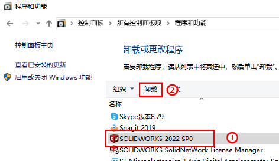
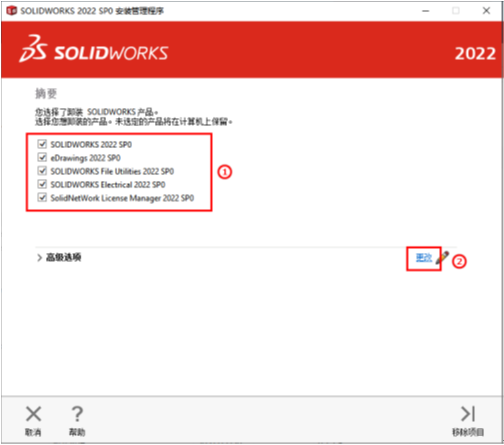
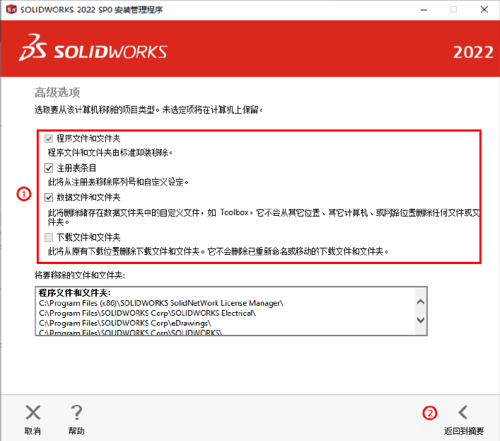

SOLIDWORKS 卸载向导
首先说明：
1、该卸载操作只对客户端数据操作，服务器端最好先做数据备份；
2、正版用户注意：卸载前请进行序列号注销转移，操作详见《SW安装许可转移》
卸载步骤：
1、管理员账户登录电脑；打开控制面板 → 卸载程序 → 选择 SOLIDWORKS 20XX SPX，点击”卸载”

2、进入卸载界面，勾选全部产品，同时更改 “高级选项”

3、勾选所有数据文件和注册表文件，然后 “返回到摘要”，进行卸载软件

4、 卸载完成，找到并删除以下路径文件夹；
1
2
3
4
5
6
7
8
9
10
11
| a\) 'C:\\Users\\\[username\]\\AppData\\Roaming\\SOLIDWORKS'；
b\) 'C:\\Users\\\[username\]\\AppData\\Roaming\\DassaultSystemes'；
c\) 'C:\\Users\\\[username\]\\AppData\\Local\\DassaultSystemes'；
d\) 'C:\\Users\\\[username\]\\AppData\\Local\\TempSW 备份目录'；
e\) 'C:\\Users\\\[username\]\\AppData\\Local\\SolidWorks'；
f\) 'C:\\Program Files\\SOLIDWORKS Corp' ，此为默认安装目录路径；
g\) 'C:\\Program Files\\Common Files\\SOLIDWORKS Shared'
h\) 'C:\\ProgramData\\FLEXnet'；
i\) 'C:\\ProgramData\\SOLIDWORKS'；
j\) 'C:\\ProgramData\\SOLIDWORKS Electrical'；
k\) 'C:\\SOLIDWORKS Data'，
|
（请注意，”AppData”和”ProgramData”可能是隐藏文件夹。您可以在文件资源管理器的”文件夹选项”中激活”显示隐藏的文件、文件夹和驱动器”选项；）
路径中存在多个相同带有序号的文件夹，请一并删除，如’C:\SOLIDWORKS Data (2)’；
注册表信息
（清除之前建议进行备份）
若卸载程序无用（或没有了卸载程序），那需手动清除如下注册表。#或下载清理 SW 注册表工具
5、 Win+R 打开运行，输入”regedit”打开注册表编辑器
6、 清除以下注册表键文件夹:
1
2
3
4
5
6
7
8
9
10
11
| a\) 'HKEY_CURRENT_USER\\Software\\FLEXlm License Manager'；
b\) 'HKEY_CURRENT_USER\\Software\\SolidWorks'；
c\) 'HKEY_CURRENT_USER\\Software\\SolidWorks BackOffice'；
d\) 'HKEY_CURRENT_USER\\Software\\SWActivation'；
e\) 'HKEY_CURRENT_USER\\SOFTWARE\\Trace Software'；
f\) 'HKEY_LOCAL_MACHINE\\SOFTWARE\\FLEXlm License Manager'；
g\) 'HKEY_LOCAL_MACHINE\\Software\\SolidWorks'；
h\) 'HKEY_LOCAL_MACHINE\\SOFTWARE\\Trace Software'；
i\) 'HKEY_LOCAL_MACHINE\\SOFTWARE\\WOW6432Node\\Dassault Systemes'；
j\) 'HKEY_LOCAL_MACHINE\\SOFTWARE\\WOW6432Node\\FLEXlm License Manager
k\) 'HKEY_LOCAL_MACHINE\\SOFTWARE\\WOW6432Node\\SolidWorks'；
|
最后运行“清理 SW 注册表”，特别注意，这个也会清理 EPDM 的注册表信息。
[HKEY_CURRENT_USER\SOFTWARE\solidworks]
[HKEY_LOCAL_MACHINE\SOFTWARE\solidworks]
文件夹残留
删除 SW 文件夹相关目录，清理以下 4 个文件夹内容：（请在 C 盘和安装盘进行搜索查找）
- 2DEditor
- SolidWorks
- FLEXnet
- Dassault